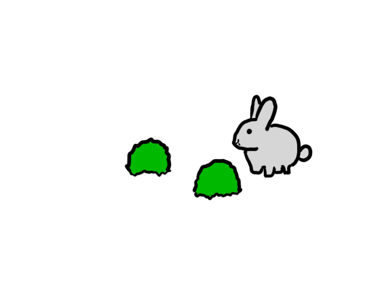
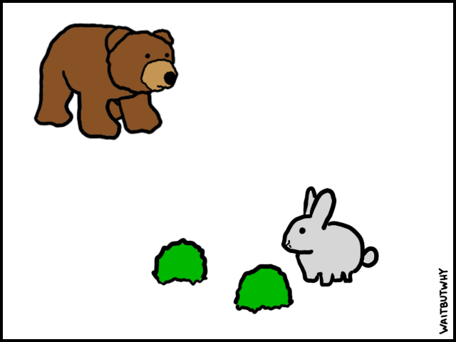
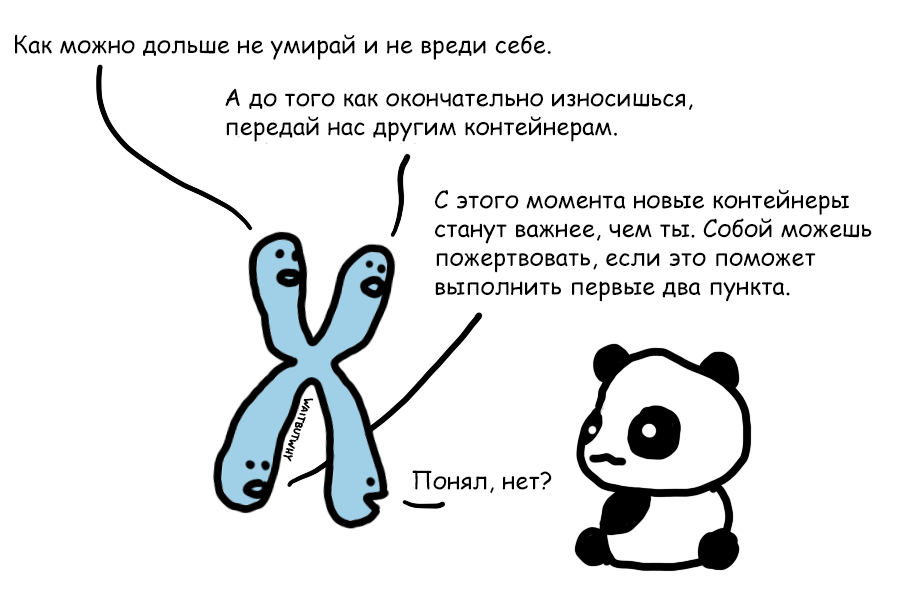

В животном мире обстановка довольно напряженная.

Только вот состоит животный мир не совсем из животных. Это мир триллионов цепочек генетической информации — и каждая одержима бессмертием. А во вселенной, которая при каждом удобном случае пытается обратить порядок в хаос, за бессмертие приходится отчаянно и непрерывно бороться — особенно хрупким и мудреным молекулам ДНК. Большинство земных цепочек живут недолго, и гены, что не проявили в игре за бессмертие должного таланта, давно исчезли. Те, что живут на Земле сегодня, исключительны и в плане мотивации, и в плане талантов. Это настолько крутые специалисты по выживанию, что существуют уже почти четыре миллиарда лет и прекращать не собираются.
Животные всего-навсего изобретение этих выдающихся генов. Врéменные контейнеры, обеспечивающие сохранность и бессмертие. Если бы гены умели говорить со своими животными, они давали бы им пару-тройку простых команд:
Но разговаривать с животными гены не умеют, а потому контролируют их с помощью специализированной «прошивки», автоматизирующей выживание.
Простыми животными прошивка управляет с помощью инстинктов. У более сложных она включает в себя набор ощущений. Это высокоуровневые механизмы по управлению поведением: наказание в виде боли, поощрение в виде удовольствия и прочие эмоциональные воздействия.
Генам нужно, чтобы животные сохраняли как можно больше энергии. Поэтому по умолчанию выше других стоит ползунок «усталость».Когда все идет гладко, прошивка работает в фоне в режиме энергосбережения. Но в какой-то момент запасы энергии у животного начнут снижаться. Тогда прошивка включится на полную и начнет поднимать ползунок «голод», пока тот не окажется выше «усталости».
Но превыше всего — распространение генов, поэтому всякий раз, когда есть шанс на спаривание, выше всего остального прошивка ставит ползунок «возбуждение».